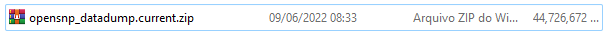

01 - Aquisição dos Dados
Construindo um dataset¶
Para auxiliar nesta tarefa de predizer fenótipos baseado no material genético, podem ser aplicados modelos de Aprendizado de Máquina. Para isso, são necessários... DADOS!!! E é sobre a coleta e tratamento destes dados que se trata este trabalho.
Com o advento das leis de proteções de dados, dados genéticos a nível individual dificilmente podem ser encontrados na internet hoje em dia, bancos de dados genéticos tradicionais e publicações científicas que disponibilizavam os dados não permitem mais o acesso.
Uma forma de trabalhar com dados abertos e estudar relações entre dados genéticos e fenótipos é a plataforma openSNP, que permite que clientes de empresas que fazem testes genéticos publiquem seus resultados e compartilhem ainda seus fenótipos.
Usando esta plataforma, foi possível baixar um grande arquivo que inclui dados genéticos de 6.322 usuários acompanhados da autodeclaração de seus fenótipos.
O arquivo baixado:

Na plataforma, estão cadastrados 673 fenótipos que o usuário pode preencher.
Dentre os arquivos disponibilizados, existe um arquivo auxiliar contendo os dados para os fenótipos respondidos por cada usuário.
Trabalhando com o arquivo auxiliar de Fenótipos¶
Dos 6.326 usuários que fizeram uploads dos genéticos individuais, 1.678 deles preencheram o campo para cor dos olhos.
- Nesta etapa foi feita a leitura do arquivo contendo os fenótipos.
- Filtragem dos usuários que declaram a cor do olho.
- Agrupamento das cores do olho em categorias:
- Azul, Verde, Cinza: Olhos predominantemente claros.
- Intermediários: Castanho claro, mel, avelã (hazel).
- Castanho.
- Gravação do conjunto de dados processado em um arquivo auxiliar.
Nesta etapa sobraram apenas 1286 usuários, devido ao descarte de rótulos não informativos e de dados duplicados.
Dicionário usado para mapear os dados:
color_map = {
"Brown":"Brown",
"Blue":"BGG",
"Hazel":"Int",
"Blue-grey":"BGG",
"Green":"BGG",
"Dark brown":"Brown",
"Blue-green":"BGG",
"Hazel (brown/green)":"Int",
"Hazel/light brown":"Int",
"Gray-blue":"BGG",
"Blue-grey; broken amber collarette":"BGG",
"hazel":"Int",
"Dark blue":"BGG",
"Green-hazel":"Int",
"Green-brown":"Int",
"brown":"Brown",
"Green-gray":"BGG",
"Blue-green":"BGG",
"blue-green":"BGG",
"blue":"BGG",
"Blue, grey, green, changing":"BGG",
"Blue grey":"BGG",
"Blue with yellow parts":"BGG",
"Blue-grey with central heterochromia":"BGG",
"Light-mixed green":"BGG",
"blue":"BGG",
"blue-grey":"BGG",
"Blue-green; amber collarette, and gray-blue ringing ":"BGG",
"Blue with a yellow ring of flecks that make my eyes look green depending on the light or my mood":"BGG",
"Brown/black":"Brown",
"Hazel (light brown, dark green, dark blue)":"Int",
"Blue-green-grey":"BGG",
"Green":"BGG",
"Brown-amber":"Int",
"blue, grey, green, changing":"BGG",
"Amber":"Int",
"Amber - (yellow/ocre brown)":"Int",
"Hazel/Light Brown":"Int",
"Amber - (yellow/ocre brown)":"Int"
}
Dataset 1¶
- user_id: número identificação do usuário.
- genotype_filename: padrão que identifica o arquivo com os dados genéticos do usuário.
- Eye_color: String contendo a cor do olho declarada pelo usuário.
- color_cat: Categorias de cor do olho, mapeada pelo dicionário acima.
- BGG: Verde, Cinza ou Azul.
- Int: Tons intermediários.
- Brown: Castanho, escuro.
Leitura dos SNPs dos arquivos individuais.¶
Nesta etapa será construído um conjunto de dados contendo os snps que queremos analisar e o id do usuário para cada usuário.
- Mapeamento dataset1['genotype_filename'] para o nome real do arquivo.
- Criação de um conjunto de dados auxiliar utilizando a biblioteca
glob. - Utilização da biblioteca snps para parsear os dados genéticos de cada indivíduo em um objeto pandas dataframe.
- Filtragem do dataframe contendo dados individuais para criar um dataframe individual apenas dos dados de interesse.
- Junção dos dados individuais em um dataframe com todos os dados.
Dataset2¶
- user_id: número identificação do usuário.
- filename: string contendo o nome verdadeiro de cada arquivo individual.
Lista das SNPs que queremos filtrar.¶
Foram escolhidos algumas SNPs com valor preditivo para cor dos olhos segundo artigos científicos da área.
snps_eye_color = [
'rs12913832',
'rs1800407',
'rs12896399',
'rs16891982',
'rs1393350',
'rs12203592',
'rs1129038',
'rs116363232',
'rs1289399']
Após a execução de um função que:
- Passa por cada nome de arquivo,
- Carrega os dados individuais em um dataframe usando a biblioteca
snps. - Salva o valor de cada snp em um dicionário ou salva como "missing" caso não exista a SNP desejada.
Foi criado um dataframe contendo o valor das SNPs para cada um dos usuários presentes no Dataset2.
Dataset3¶
-
user_id: número identificação do usuário.
-
rs12913832: ['GG', 'AG', 'AA', 'missing']
-
e assim por diante.
Considerações¶
A partir do conjunto de dados produzidos, podem ser analisadas correlações entre as SNPs e o fenótipo desejado. Também pode ser feita a modelagem preditiva do fenótipo, sob a ótica do aprendizado de máquina.
Os detalhes sórdidos dessa extração de dados podem ser verificados no Github.